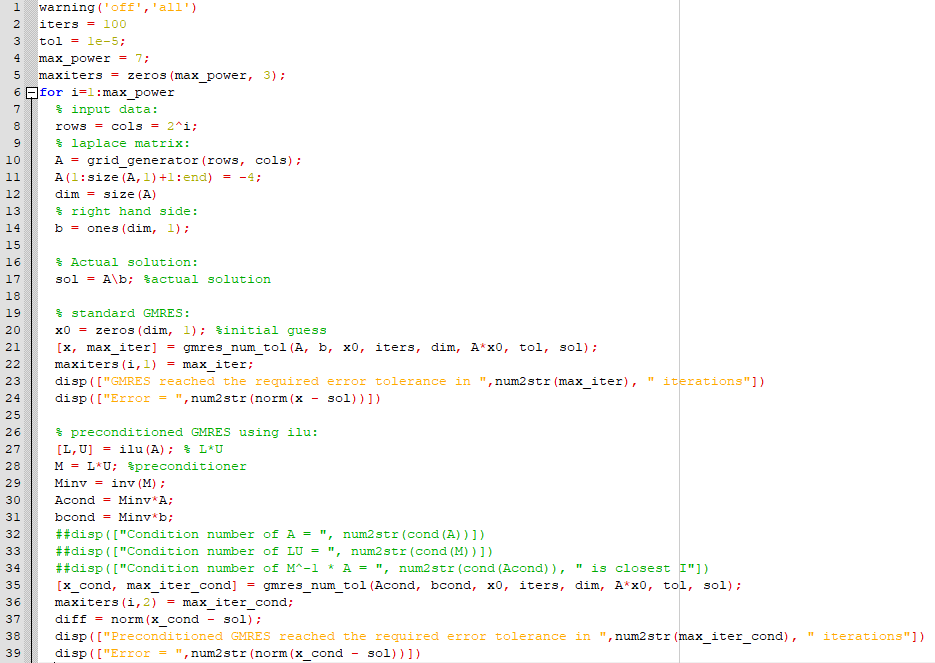
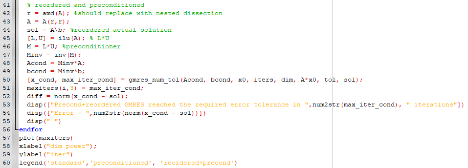
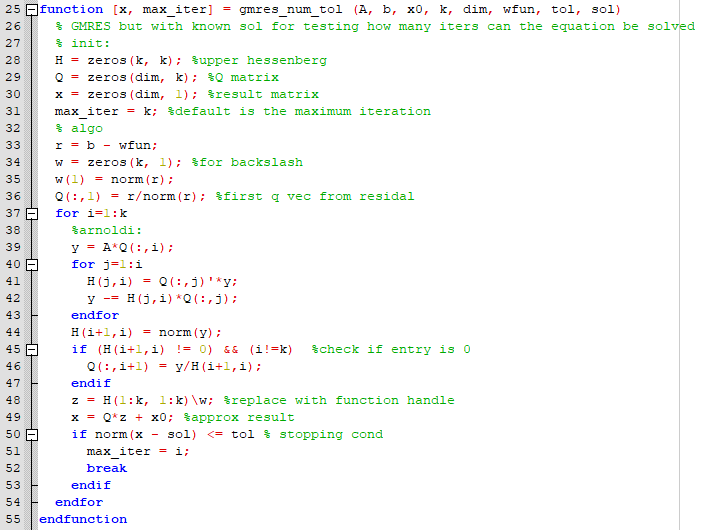
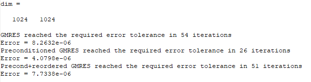
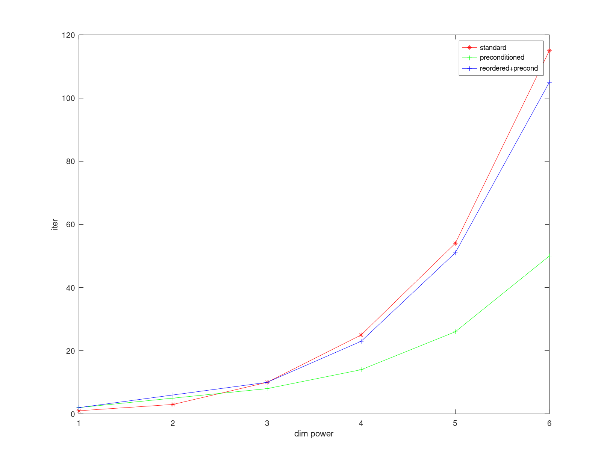

-
E66:
-
Main caller, contains GMRES, precond-GMRES, reordered-precond-GMRES:


Source Code
-
Modified GMRES function with error tolerance to determine max-iteration:

Source Code
-
Sample output for 1024 x 1024 matrix:

-
Output, the maximum iterations reached for each {GMRES, precond-GMRES, reordered-precond-GMRES (currently reordered using AMD (no nested dissection yet))} for increasing 2^k (k:=dim power) rows and cols:
